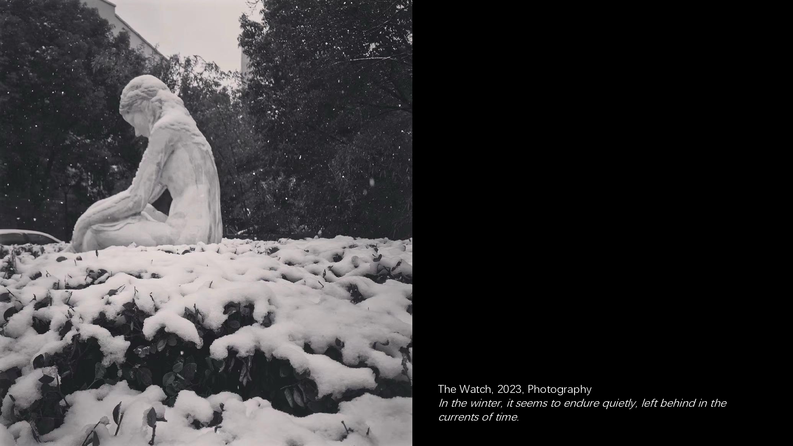
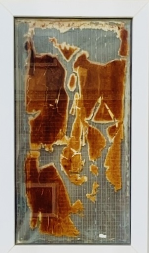

❮ ❯
Perception is the way we inhabit and respond to the world, a continuous dialogue with time, memory, and matter. It arises not only from sight and hearing, but also from the subtle textures of touch, the traces of scent, the echoes within the body, and the rhythms of breath. Even a body carrying a lesion can reveal unexpected layers of sensitivity, connecting fragility, endurance, and presence.
Through perception, moments are felt in their fullness: the past reverberates through memory, the body registers shifts in air and weight, and the smallest gestures unfold into awareness. Time’s flow becomes tangible as perception gathers the ephemeral and the persistent, creating a bridge between what is and what was. It is in this attentiveness — to the textures, sounds, scents, and quiet movements around and within — that life quietly reveals its delicate choreography.
Deep listening unfolds as a sensorial practice — a way of attuning to the fragile boundaries between body, matter, and the world. Sound is not only perceived by the ear but moves through the body, through the quiet resonances of materials and the subtle rhythms of breath. Each vibration carries memory; even silence holds the pulse of life.
For Kanny, listening is not a method but a condition of being — like breathing, it exists within us, often unnoticed. It accompanies moments of calm and of panic, tracing the intervals between tension and release. To listen deeply is to give time back to perception, to dwell within the small shifts that shape presence.
Deep listening is not about transcendence, but about remaining — staying close to what trembles, what changes, and what continues to breathe within the world.
These tracks can be played individually or simultaneously, allowing the audience to freely combine sounds.